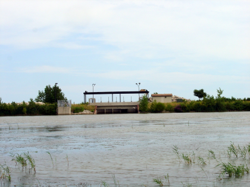

New Strategies for Restoring Coastal Wetland Functions, Maumee River AOC
Template #71

U.S. Geological Survey (USGS) scientists are focusing on restoring natural water flow and ecological processes between coastal wetlands in the Ottawa National Wildlife Refuge (Ohio) and adjacent to Lake Erie to improve fish and wildlife habitat. This pilot project intends to develop sustainable approaches that will restore coastal wetland function and increase ecosystem resilience to be used as a model throughout the Great Lakes basin with clear measures of success.
Through extensive partnerships with the U.S. Fish and Wildlife Service and Ducks Unlimited, a water control structure was constructed at Ottawa National Wildlife Refuge (ONWR) to restore hydrologic connection between a 99 acre coastal wetland and Lake Erie waters for the first time in nearly 40 years. Intense data collection by USGS and close interaction with refuge managers and other partners have led to an unprecedented look at the system response to a large wetland restoration action, implementation of adaptive management practices, and recognition of water quality improvements associated with habitat restoration in the Maumee River Area of Concern.
The reconnected wetland continues to be a sink for phosphorus, nitrogen, and sediment from Crane Creek. High levels of sediment and nutrient retention (~50%) have been observed during the passage of storm or flood events that move large quantities of water into the wetland. These data show the potential water quality improvements associated with this type of wetland restoration and provide baseline data that can be used to promote further restoration efforts in the Maumee AOC and other Great Lakes coastal areas.
The results of this study have led to further wetland reconnection projects throughout the Great Lakes basin. Numerous GLRI projects have included water-control or fish-passage structures as a direct result of our work, and the ongoing monitoring at ONWR has helped shape wetland management decisions regionally. Although focused on the Crane Creek coastal wetland complex from 2010-2012, the results of this work are influencing regional management and restoration decisions and supporting expanded landscape-level analyses in 2013.
Fish diversity and abundance in the restored wetland has increased dramatically in the two years since reconnection. The wetland has been acting as a nursery and breeding grounds for many species including: northern pike (Esox lucius), largemouth bass (Micropterus salmoides), white and black crappies (Pomoxis spp.), and numerous species of sunfish (Lepomis spp.). High resolution sonar data have shown that fish access the wetland at all times of the day from late winter to late autumn. Data on fish species richness and abundance changes could be used to identify progress toward delisting of the “Degraded Fish and Wildlife Population” BUI in Maumee River AOC. Discussions with Ohio EPA and Partners for Clean Streams are helping guide analysis of existing data and data collection strategies in 2013.
Invasive common carp were effectively excluded from the restored wetland habitat during their destructive spawning stages through the use of specially designed gates in the water control structure. By using an established bar width and excluding mature breeding size carp, integrated pest management approaches were applied to limit the risk of damage by invasive carp while still allowing northern pike and other native fish to pass into the wetlands. Similar technologies are being included in many other GLRI-funded coastal wetland restoration projects in western Lake Erie and Saginaw Bay, Lake Huron.
Waterfowl and piscivorous bird usage of the wetland increased after being reconnected to Lake Erie. The availability of wetland habitat was crucial in 2012 when low water levels stranded some coastal wetlands and drought conditions contributed to dry conditions in many diked wetlands in the area. However, the reconnected wetland held water throughout the summer and was used extensively by migrating waterfowl in the autumn.
A model was developed to estimate total phosphorus and total sediment loads to the reconnected wetland using high frequency turbidity and discharge measurements. This allows for more accurate estimates of nutrient and sediment retention in the wetland and can serve as a foundation for the development of similar models applicable at larger scales.
Kurt P. Kowalski, kkowalski@usgs.gov
Great Lakes Science Center (GLSC)
734-214-9308